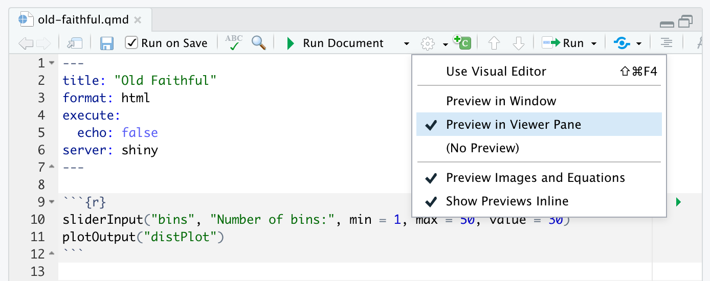
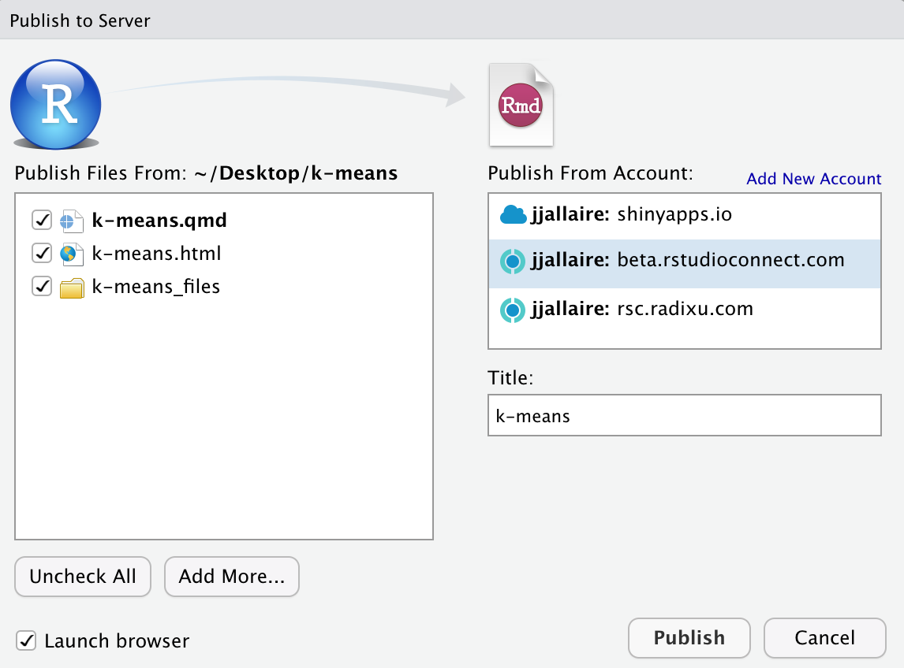

Running Documents
Overview
There are a number of ways to run Shiny interactive documents:
- Use Run Document within the RStudio IDE.
- Use the
quarto runcommand line interface. - Deploy them to a server for use by a wider audience.
We’ll cover all of these scenario in depth here. Note that in order to run interactive Shiny documents you will to intall the very latest version of the rmarkdown package (v2.10) which you can install as follows:
install.packages("rmarkdown")RStudio IDE
While you are developing an interactive document it will likely be most convenient to run within RStudio.
Note that you need the daily build of RStudio in order to run Quarto interactive documents, which you can download here https://dailies.rstudio.com.
Click the Run Document button while editing a Shiny interactive document to render and view the document within the IDE:

When you make changes, just click Run Document again to see them reflected in the document preview.
Two options you may want to consider enabling are Run on Save and Preview in Viewer Pane (by default previews occur in an external window). You can access these options on the editor toolbar:

Command Line
You can also run Shiny interactive documents from the command line via quarto run. For example:
quarto run document.qmdThere are a number of options to the run command to control the port and host of the document server as well as whether a browser is automatically opened for the running document. You can learn more about these options with quarto run help.
If you are within an R session you can also use the quarto R package to run a document:
library(quarto)
quarto_run("document.qmd")Deployment
ShinyApps
You can publish Shiny interactive documents to the ShinyApps hosted service. To do this you should ensure that you have:
An account on ShinyApps (use the signup form to create an account).
The very latest versions of the rsconnect and quarto R packages. You can install them as follows:
install.packages("rsconnect") install.packages("quarto")
You can then deploy your interactive document using the quarto_publish_app() function of the quarto package. You can do this as follows (working from the directory that contains your document):
library(quarto)
quarto_publish_app(server = "shinyapps.io")If you are using RStudio you can also use the Publish button  available when working with an interactive document:
available when working with an interactive document:

Note that you should always Run Document locally prior to publishing your document (as this will create the .html file that is served on ShinyApps.
RStudio Connect
RStudio Connect is a server product from RStudio for secure sharing of applications, reports, and plots. You can publish Shiny interactive documents to RStudio Connect in much the same way as described above for ShinyApps.
First, make sure you very latest development versions of the rsconnect and quarto R packages. You can install them as follows:
install.packages("rsconnect")
install.packages("quarto")Next, deploy your interactive document using the quarto_publish_app() function of the quarto package, providing the domain name or IP address of your RStudio Connect installation via the server parameter. You can do this as follows (working from the directory that contains your document):
library(quarto)
quarto_publish_app(server = "rsc.example.com")If you are using RStudio you can also use the Publish button  as described above in the ShinyApps documentation:
as described above in the ShinyApps documentation:

As with ShinyApps, you should always Run Document locally prior to publishing your document (as this will create the .html file that is served by RStudio Connect).